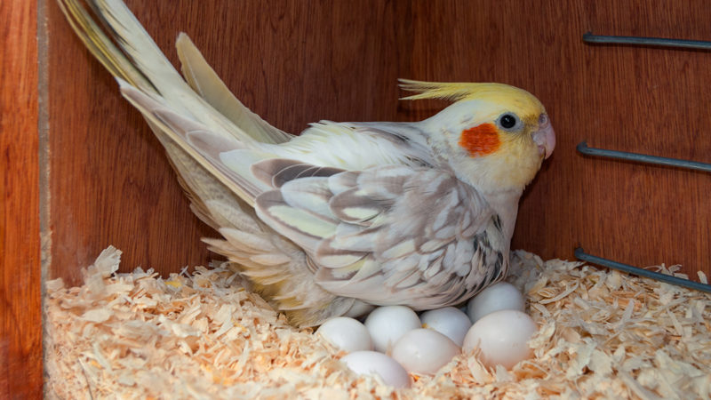
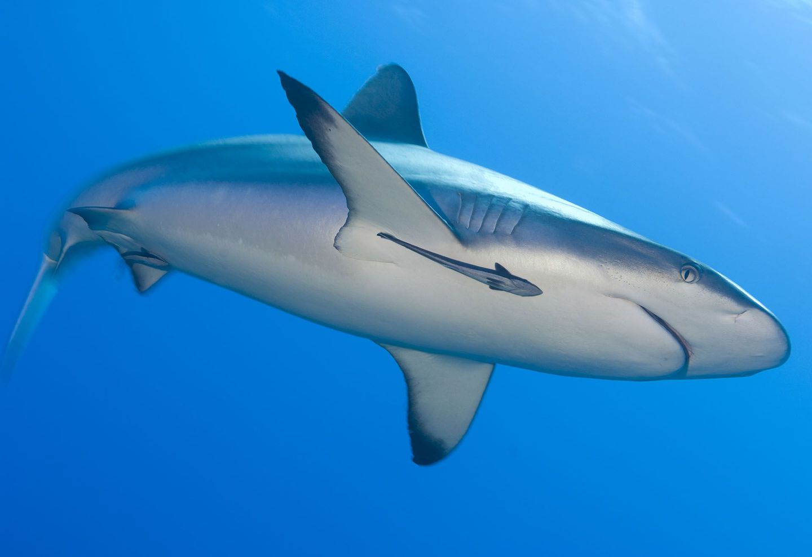
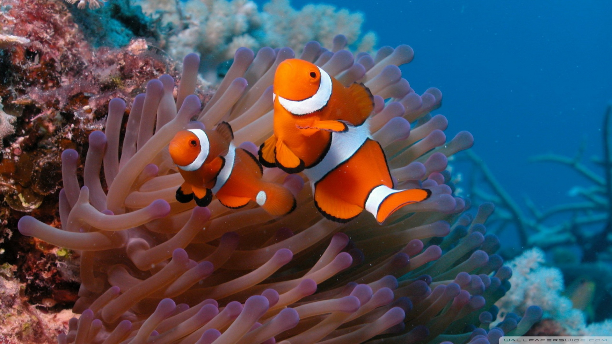

Symbiosis is a close, long term relationship between two organisms of different species. These relationships usually fall in one of three categories: Parasitism, Commensalism, and Mutualism.
A symbotic relationship between two organisms in which one benefits while the other is harmed. The organism that benefits is a refered to as a parasite and the organism that is harmed is refered to as the host.
Examples include cockatoos and local birds. In this specific example, cockatoos will lay their eggs at the host's nest while they are away and take away a few of the host's eggs so that the host can end up raising the cockatoos instead of her own chicks.
A symbotic relationship between two organisms in which one benefits while the other is not affected.
An example of this includes remoras and sharks. Remoras have special suctions to the top of their bodies allowing them to take a ride of sharks so that they could get to their destination quickly and safely. In this relationship, the sharks pay no mind to the remoras, since they don't harm the shark in any way.
A symbotic relationship between two organisms in which both organisms benefit.
An example includes in clownfish and sea anemone. Clownfish have a layer of mucus that allows signals to the sea anemone that they should not sting the clownfish, this in turn gives the clownfish a home safe from predators. The clownfish helps the sea anemone by luring fish towards it so that both the clownfish and sea anemone can share a meal.
